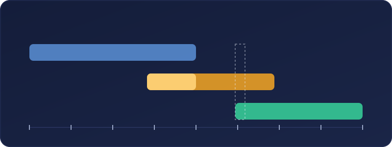
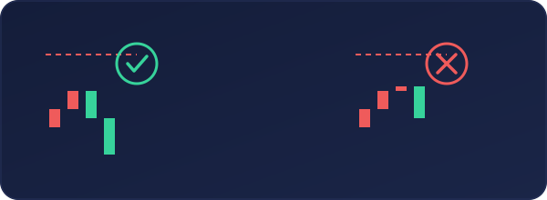
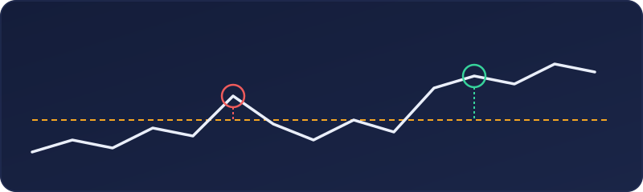
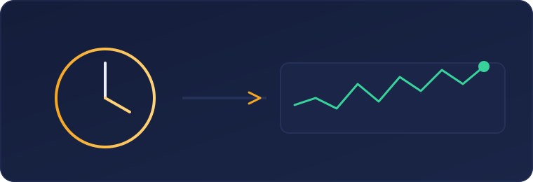
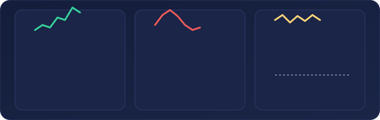
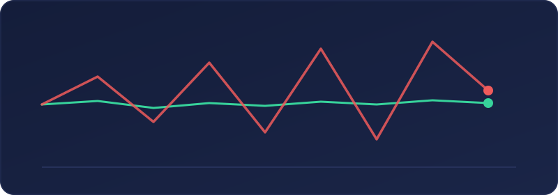

La sesión americana concentra liquidez, noticias y reajustes de posiciones. Este artículo enseña a leer esa transición mediante rangos de sesión, confirmación, escenarios condicionales y control del riesgo. Los seis gráficos son ilustraciones conceptuales, no datos históricos ni señales de compra o venta.
Introducción: la apertura de Nueva York no empieza en Nueva York
La sesión de Nueva York suele describirse como el gran momento del día en Forex, pero esa expresión puede inducir a error: el precio no llega a Estados Unidos con la memoria en blanco. Antes de que la actividad norteamericana alcance su máxima intensidad, Asia ya ha construido un rango, Europa ha reaccionado a ese rango y Londres puede haber iniciado una tendencia, provocado un barrido o dejado al mercado atrapado en equilibrio. Por eso, operar Nueva York con criterio consiste menos en reaccionar a una vela rápida y más en leer una historia que lleva varias horas desarrollándose.
Este artículo propone una metodología de observación, no un sistema infalible. Los máximos y mínimos de sesión son referencias visibles para numerosos participantes, pero no poseen un poder mágico. A veces actúan como zonas de liquidez; otras veces son atravesados sin reacción. La clave es combinar ubicación, tiempo, comportamiento del precio y riesgo. La pregunta útil no es "¿romperá el máximo de Asia?", sino "si lo rompe, ¿acepta precios fuera del rango, vuelve dentro de él o queda sin continuación?".
También conviene aclarar qué significa "apertura de Nueva York". En Forex, mercado descentralizado y prácticamente continuo durante la semana, no existe una campana única equivalente a la de una bolsa. Algunos operadores toman como referencia el comienzo de la jornada institucional estadounidense; otros observan las 8:30 ET, cuando se publican muchos datos macroeconómicos, y otros la apertura regular de la renta variable estadounidense a las 9:30 ET. Lo importante es definir la referencia antes de analizar y mantenerla constante en el diario de trading.
Si todavía te falta esa base, conviene repasar antes los conceptos generales de sesiones y de mercado en la guía básica de trading, porque este artículo da por conocidos términos como spread, rango o tendencia.
Un mercado continuo organizado por sesiones
La división entre Asia, Europa y América es una herramienta de lectura. Cada tramo concentra participantes, flujos comerciales, coberturas, publicaciones económicas y hábitos distintos. Tokio, Singapur y Hong Kong dominan buena parte del tramo asiático; Londres es el gran centro del mercado europeo; y Nueva York incorpora bancos, fondos, empresas y mercados de futuros y acciones de Estados Unidos. Las fronteras no son exactas: las instituciones operan globalmente y los horarios cambian con el horario de verano.
El valor práctico de esta división está en ordenar la información. Asia suele establecer el primer equilibrio operativo del día. Europa introduce volumen y puede romper ese equilibrio. Nueva York recibe ambos antecedentes y, durante la superposición con Londres, reúne a participantes de los dos grandes centros. Los datos del Banco de Pagos Internacionales confirman la enorme escala del mercado y el peso de Reino Unido y Estados Unidos como centros de negociación; eso ayuda a entender por qué la transición Londres-Nueva York merece atención, aunque no garantice tendencia.
Para trabajar con rigor, cada trader debe configurar un indicador de sesiones o marcar manualmente las horas en la zona horaria de su plataforma. Dos veces al año pueden aparecer desajustes temporales entre Europa y Estados Unidos porque sus cambios de horario de verano no coinciden exactamente. Un gráfico que parecía mostrar una apertura a la misma hora local puede desplazarse una hora durante varias semanas. Registrar siempre UTC o ET junto a la hora del bróker evita análisis retrospectivos inconsistentes.

El rango asiático: el primer mapa del día
El rango asiático se define mediante el máximo y el mínimo alcanzados durante una ventana previamente establecida. No existe una única convención universal; por eso debe elegirse una ventana coherente con el par y la plataforma, y conservarla durante la evaluación. Además de los extremos, resulta útil marcar el punto medio, la amplitud en pips y la posición del cierre asiático. Un rango estrecho sugiere compresión, pero no obliga a una expansión inmediata. Uno ancho puede haber consumido parte importante del recorrido diario.
¿Por qué se observan tanto esos extremos? Porque concentran decisiones. Encima del máximo pueden existir órdenes stop de vendedores, compras de ruptura y toma de beneficios; debajo del mínimo ocurre la situación inversa. Cuando el precio visita una de esas zonas, la ejecución de órdenes puede acelerar el movimiento. Sin embargo, la presencia de liquidez no revela por sí sola la dirección posterior. El mercado puede usarla para continuar o para completar un barrido antes de girar.
Conviene distinguir tres resultados. En una ruptura aceptada, varias velas cierran fuera del rango, los retrocesos respetan el nivel roto y el precio desarrolla nuevos máximos o mínimos. En un barrido, el precio atraviesa el extremo, rechaza con rapidez y vuelve a cerrar dentro. En una ruptura fallida más lenta, permanece un tiempo fuera pero no progresa y termina regresando al equilibrio. La lectura mejora cuando se observa la reacción, no cuando se anticipa el resultado.
La amplitud debe contextualizarse. Veinte pips en EUR/USD no significan lo mismo en un día tranquilo que antes de una decisión de tipos, ni equivalen al mismo riesgo en GBP/JPY. Comparar el rango con la volatilidad reciente del propio par (por ejemplo, con el rango medio de varios días) permite saber si Asia dejó una caja realmente estrecha o si ya recorrió una fracción elevada de lo habitual. El objetivo no es convertir un promedio en techo, sino evitar etiquetas absolutas.

Europa y Londres: la sesión que modifica el guion
Cuando Europa entra plenamente, el mercado recibe nueva liquidez y nuevas razones para reajustar precios. Londres puede romper uno de los extremos asiáticos, explorar ambos o respetarlos. El trader de Nueva York debería resumir lo sucedido antes de pensar en una entrada: dirección neta de Londres, extremo asiático atacado, calidad de la ruptura, distancia recorrida y zonas pendientes. Esa frase de contexto es más valiosa que una colección de indicadores contradictorios.
Si Londres rompe el máximo de Asia, consolida por encima y continúa con retrocesos ordenados, Nueva York puede encontrar una tendencia ya establecida. La oportunidad no consiste necesariamente en comprar el punto más alto; puede aparecer en un retroceso hacia el nivel roto, una zona de consolidación o el máximo europeo anterior. El riesgo principal es incorporarse cuando el movimiento está extendido y queda poco recorrido razonable antes de una resistencia de marco superior.
Si Londres barre el máximo asiático y vuelve al rango, el mensaje cambia. La incapacidad para sostener precios superiores puede favorecer una rotación hacia el punto medio o el extremo contrario, sobre todo si Nueva York confirma con cierres y estructura. Pero "barrido" no debe convertirse en sinónimo automático de reversión. Un segundo intento puede romper de verdad. Por eso se necesita una invalidación clara: si el precio recupera y acepta de nuevo por encima, la tesis bajista deja de ser válida.
Cuando Londres permanece dentro del rango o deja máximos y mínimos solapados, Nueva York puede ser la sesión que decida. También puede continuar el equilibrio durante horas. En estos días, la paciencia es una posición. Si el precio cruza repetidamente el punto medio, las rupturas carecen de seguimiento y el espacio hasta el siguiente nivel es pequeño, reducir tamaño o no operar suele ser una decisión más profesional que inventar una tendencia.

Este tipo de rupturas que no se sostienen es justo lo que se analiza con más detalle en el artículo sobre falsas rupturas, que conviene leer junto a este si la sesión europea te suele confundir.
La superposición Londres-Nueva York
La superposición reúne flujos europeos y norteamericanos, y suele acompañarse de actividad elevada en pares vinculados al dólar, euro y libra. CME ha observado que el flujo de sus opciones FX alcanza un máximo alrededor del cierre de Londres y la apertura de Nueva York. Ese dato respalda la idea de una ventana especialmente activa, pero liquidez y facilidad no son equivalentes: más órdenes pueden reducir spreads en condiciones normales y, a la vez, producir desplazamientos rápidos cuando aparece información.
Durante esta ventana, los participantes europeos pueden cerrar o ajustar posiciones mientras los estadounidenses abren las suyas. Una tendencia londinense puede recibir continuidad, toma de beneficios o una reversión completa. La tarea consiste en evaluar quién parece conservar el control después de la primera interacción. Un impulso norteamericano que rompe la estructura de Londres y mantiene el cambio tiene más peso que una mecha aislada que desaparece en segundos.
También importa el calendario. Informes de empleo, inflación, ventas minoristas, decisiones de bancos centrales o discursos pueden alterar el contexto en un instante. El análisis técnico previo sigue siendo útil para saber dónde se produce la reacción, pero no protege de deslizamientos ni saltos de precio. Antes de operar, debe comprobarse el calendario, conocer la hora exacta y decidir de antemano si la estrategia permite exposición durante el evento.
Por qué esperar entre 15 y 30 minutos puede mejorar la lectura
Esperar no es una ley universal, pero sí una regla operativa razonable para quien todavía no posee una ventaja demostrada en los primeros minutos. La apertura de la renta variable estadounidense a las 9:30 ET puede coincidir con reajustes de carteras, coberturas y órdenes acumuladas. A ello se suman datos publicados antes de esa hora. El resultado puede ser una secuencia de impulsos opuestos que castiga entradas impulsivas y stops demasiado ajustados.
Los primeros quince minutos permiten observar el rango inicial: máximo, mínimo, tamaño, velocidad y cierres. Entre el minuto quince y el treinta se puede evaluar si el mercado acepta la ruptura, vuelve al rango o construye una consolidación. La espera transforma una predicción en una pregunta verificable. En lugar de comprar porque "Nueva York debería continuar Londres", se espera a que el precio respete una zona, recupere un nivel o confirme un cambio de estructura.
No obstante, esperar tiene un coste: algunos movimientos limpios arrancan sin retroceso y la entrada desaparece. Ese coste debe aceptarse. Perder una operación no equivale a perder dinero; perder la entrada sí puede convertir la frustración en riesgo. Una metodología profesional define cuándo la oportunidad queda cancelada por extensión, relación riesgo-beneficio insuficiente o ausencia de un punto lógico de invalidación.
La ventana elegida debe adaptarse al estilo. Un scalper experimentado puede trabajar microestructuras en segundos, mientras que un operador intradía en velas de cinco o quince minutos gana información esperando cierres. La recomendación de 15-30 minutos es especialmente útil como filtro conductual: reduce decisiones bajo sobresalto. Debe probarse con datos propios y en simulación, no aceptarse como dogma.
Protocolo de análisis antes de operar
Primero, marque el máximo, mínimo y punto medio de Asia, junto con el máximo y mínimo de Europa. Añada únicamente niveles de marco temporal superior que sean relevantes y cercanos: máximo o mínimo del día anterior, apertura diaria y soportes o resistencias evidentes. Un gráfico saturado dificulta jerarquizar. Cada línea debe responder a una pregunta concreta sobre ubicación o invalidación.
Segundo, escriba una hipótesis condicional para cada lado. Ejemplo: "Si Nueva York mantiene el máximo asiático recuperado por Londres y forma un mínimo creciente, buscaré continuación alcista; si pierde ese nivel y cierra dentro del rango, descartaré la compra y observaré rotación". Las condiciones obligan a pensar antes de la velocidad. También evitan enamorarse de un único escenario.
Tercero, calcule el riesgo antes de buscar el beneficio. Defina el punto donde la idea queda invalidada, mida la distancia hasta allí y ajuste el tamaño de posición al porcentaje máximo permitido. Después compruebe si existe espacio razonable hasta el siguiente obstáculo. Si el stop lógico exige un tamaño incómodo o el objetivo queda demasiado cerca, la operación no mejora moviendo el stop arbitrariamente.
Cuarto, observe la apertura sin ejecutar durante la ventana acordada. Registre el rango inicial, la reacción a los extremos previos y el comportamiento del spread. Quinto, solo actúe si aparece el patrón escrito. Sexto, documente captura, motivo, entrada, stop, objetivo, resultado en unidades de riesgo y calidad de ejecución. La revisión semanal debe separar "buena decisión con pérdida" de "mala decisión con ganancia".

Escenarios prácticos
Escenario A, continuación alcista. Asia deja un rango estrecho; Londres rompe el máximo, cierra por encima y avanza. Nueva York retrocede durante los primeros minutos, pero no recupera el interior del rango europeo. Después forma un mínimo creciente y supera el máximo del rango inicial. La entrada puede plantearse en la confirmación o en un retesteo, con invalidación bajo la estructura que sostiene la tesis. Se evita comprar si el precio ya está extendido contra una resistencia diaria.
Escenario B, reversión tras barrido. Londres supera el máximo asiático y europeo, pero la subida pierde velocidad. Nueva York realiza una última extensión, deja rechazo y cierra de nuevo bajo el nivel. Tras 15-30 minutos, un retroceso no logra recuperarlo. La tesis bajista busca una rotación hacia el punto medio o zonas inferiores. El stop no se coloca por costumbre, sino donde una recuperación sostenida demostraría que el rechazo fue temporal.
Escenario C, ruptura bajista limpia. Asia es amplia, pero Londres comprime cerca de su mínimo. Nueva York rompe el mínimo europeo con cuerpos claros y el primer retroceso falla por debajo. Puede existir continuación, siempre que el siguiente soporte deje espacio suficiente. El error habitual es vender exactamente en el mínimo después de una vela desproporcionada; esperar el retroceso puede ofrecer mejor invalidación o confirmar que no habrá entrada.
Escenario D, doble barrido y regreso al centro. Londres toma el máximo asiático y Nueva York toma el mínimo, pero ambos extremos son rechazados. El precio vuelve al punto medio y cruza varias veces. Esto describe equilibrio, no oportunidad direccional. Los objetivos se acortan, las señales pierden calidad y la opción prudente es no operar. Reconocer un día de rango es una competencia, no una falta de valentía.
Ejemplo numérico simplificado. Una cuenta de 10.000 euros limita el riesgo al 0,5 %, es decir, 50 euros. Si la invalidación técnica está a 20 pips, el tamaño debe hacer que esos 20 pips equivalgan aproximadamente a 50 euros, considerando el valor real del pip, comisiones y divisa de la cuenta. Si el siguiente nivel ofrece solo 15 pips, la relación potencial no compensa un riesgo de 20. El cálculo se realiza antes de entrar, nunca después.

Errores frecuentes en la apertura
El primer error es confundir volatilidad con dirección. Una vela grande llama la atención, pero puede representar liquidación, noticia o búsqueda de contrapartida. El segundo es tratar cada toque del máximo asiático como venta y cada toque del mínimo como compra. Los niveles son zonas de decisión; sin respuesta observable, operar contra el impulso equivale a anticipar.
El tercero es perseguir el precio por miedo a quedarse fuera. Cuando la entrada prevista ya no ofrece invalidación razonable, el plan ha caducado. El cuarto es mover el stop para evitar aceptar una pérdida. Si la invalidación fue bien elegida, ampliarla cambia la operación y aumenta el daño potencial. El quinto es recuperar inmediatamente una pérdida con otra entrada de mayor tamaño, conducta que convierte volatilidad externa en descontrol interno.
El sexto es ignorar el par. EUR/USD y GBP/USD reaccionan de forma distinta a USD/JPY o USD/CAD, y las noticias relevantes no son las mismas. El séptimo es evaluar la estrategia con pocos ejemplos seleccionados visualmente. Una regla debe estudiarse en una muestra amplia, incluyendo días de noticias, distintas fases de volatilidad, costes y operaciones no tomadas.
El octavo es sobrecargar el gráfico. Si seis indicadores repiten información similar, no crean confirmación independiente. Una estructura sencilla (sesiones, extremos, contexto superior y comportamiento de precio) suele facilitar decisiones auditables. El noveno es olvidar que el spread y el deslizamiento pueden ampliarse en momentos rápidos; un stop es un mecanismo de salida, no una garantía de precio exacto.
Gestión del riesgo y de la ejecución
La gestión del riesgo comienza con un límite pequeño y estable por operación. Para muchos operadores minoristas, arriesgar entre 0,25 % y 1 % ofrece más capacidad de sobrevivir a rachas negativas que porcentajes elevados; la cifra adecuada depende de experiencia, variabilidad del sistema y tolerancia real. No es una recomendación personalizada. Lo decisivo es que una secuencia normal de pérdidas no obligue a abandonar el plan ni amenace el capital.
Pensar en unidades R ayuda a comparar operaciones. Si el riesgo inicial es 1R, una pérdida completa vale -1R y una ganancia de dos veces esa distancia vale +2R antes de costes. La esperanza matemática depende del porcentaje de acierto, ganancia media, pérdida media y fricción. Una estrategia con menos aciertos puede ser viable si las ganancias medias superan las pérdidas; una tasa alta de acierto puede ocultar pérdidas ocasionales enormes.
El límite diario evita que un entorno adverso se convierta en una espiral. Puede expresarse como número de intentos o unidades de riesgo. Después de dos pérdidas completas, por ejemplo, detenerse protege tanto capital como calidad mental. También conviene impedir entradas simultáneas altamente correlacionadas: comprar EUR/USD y GBP/USD contra el dólar puede ser una sola apuesta macroeconómica disfrazada de dos operaciones.
La ejecución merece su propio registro. Anote spread previsto y real, deslizamiento, tipo de orden y si el precio se movía por una noticia. Los avisos de Investor.gov recuerdan que una orden stop activada se convierte normalmente en orden de mercado y su precio de ejecución puede desviarse en movimientos rápidos; aunque la fuente se dirige al mercado de valores, el principio operativo de no confundir activación con precio garantizado es relevante para comprender el riesgo de ejecución.
Finalmente, la gestión incluye la salida. Mover a break-even demasiado pronto puede eliminar operaciones sanas; mantener siempre hasta un objetivo fijo puede ignorar cambios de estructura. El método debe definir de antemano si usa objetivo único, parciales o seguimiento. Lo importante es aplicar reglas consistentes y medirlas por separado, no improvisar según el miedo de cada vela.

Todo lo anterior se desarrolla con más detalle, incluyendo ejemplos numéricos adicionales, en el artículo dedicado a la gestión del riesgo.
Cómo estudiar si la espera de 15-30 minutos funciona
Una hipótesis debe convertirse en variables. Defina par, zona horaria, referencia de apertura, duración de espera, patrón de entrada, stop, salida y filtros de noticias. Compare al menos tres grupos: entrada inmediata, espera de 15 minutos y espera de 30. Registre operaciones perdidas por esperar, falsas rupturas evitadas, relación R obtenida, deslizamiento y máxima racha negativa.
Evite el sesgo retrospectivo. El máximo y mínimo deben construirse solo con información disponible en ese momento; no se puede etiquetar una vela como "confirmación perfecta" porque ya se conoce el final. Las capturas de reproducción o un backtest programado ayudan. Reserve un periodo fuera de muestra para comprobar que la regla no fue ajustada exclusivamente al pasado.
Segmente los resultados. Una espera puede funcionar mejor en EUR/USD que en USD/JPY, en días sin datos que con nóminas, o cuando Londres ya tiene tendencia. El promedio global puede ocultar estas diferencias. Exija una muestra suficiente y calcule costes realistas. El propósito no es demostrar que 30 minutos son mágicos, sino identificar en qué condiciones añaden información y en cuáles solo empeoran el precio de entrada.
Lista de control operativa
Antes de la sesión: confirme el calendario; marque Asia, Europa y niveles diarios; mida amplitudes; identifique la dirección y extensión de Londres; establezca riesgo máximo y dos hipótesis condicionales. Durante la apertura: no improvise; observe 15-30 minutos si esa es su regla; marque el rango inicial; vigile cierres, reingresos y retesteos; descarte entradas sin espacio o con spread anormal.
Después: guarde una captura sin adornar el resultado; registre R, costes y cumplimiento; anote si la idea fue correcta pero la ejecución deficiente; deténgase al alcanzar el límite diario. Al final de la semana: revise series, no anécdotas; cuente oportunidades omitidas y operaciones evitadas; compruebe si el filtro aporta valor neto.
- Calendario y hora de referencia confirmados
- Máximos, mínimos y punto medio de Asia marcados
- Máximos y mínimos europeos marcados
- Dos escenarios condicionales escritos
- Riesgo y límite diario definidos
- Ventana inicial observada sin perseguir el precio
Conclusión: leer la transición, no perseguir la campana
La apertura de Nueva York es importante porque concentra decisiones, no porque revele siempre una dirección sencilla. Su lectura comienza con Asia, continúa con la respuesta europea y culmina en la interacción entre Londres y Estados Unidos. Los máximos y mínimos de sesión proporcionan un mapa común: muestran dónde pueden acumularse órdenes y dónde el mercado debe demostrar aceptación o rechazo. Pero solo el comportamiento posterior convierte ese mapa en información operativa.
Esperar entre 15 y 30 minutos puede ser una herramienta potente para reducir impulsividad y observar el rango inicial. No elimina falsas rupturas ni garantiza mejores entradas. A veces hará que el trader pierda el movimiento; otras veces evitará entrar en el ruido. Su valor debe medirse en una muestra propia, con horarios consistentes, costes realistas y condiciones claramente definidas.
La ventaja sostenible no procede de adivinar cada apertura. Procede de repetir un proceso: preparar niveles, formular escenarios, esperar evidencia, calcular tamaño, aceptar invalidaciones y revisar resultados. Un operador profesional no necesita participar todos los días. Necesita saber cuándo el mercado ofrece una estructura compatible con su plan y cuándo la mejor operación es conservar capital.
En última instancia, la sesión norteamericana debe entenderse como una transición de liquidez dentro de un mercado global. La historia del día importa, la ubicación importa y la ejecución importa, pero la gestión del riesgo importa todavía más. Quien aprende a leer esa secuencia deja de perseguir velas rápidas y empieza a tomar decisiones que pueden explicarse, medirse y mejorarse.
Fuentes y notas metodológicas
Banco de Pagos Internacionales (BIS), Encuesta Trienal 2025 sobre el mercado de divisas. Ver fuente
BIS Data Portal, volumen de negociación OTC de divisas por instrumento y país, abril de 2025. Ver fuente
NYSE, horario regular de negociación: 9:30 a 16:00 ET. Ver fuente
CME Group, observación sobre concentración del flujo de opciones FX alrededor del cierre de Londres y apertura de Nueva York. Ver fuente
Investor.gov, riesgos de ejecución de órdenes stop en mercados rápidos. Ver fuente
Nota sobre los gráficos: todos son esquemas originales construidos para explicar relaciones conceptuales. No reproducen cotizaciones, no constituyen backtests y no deben usarse como evidencia estadística.
Contenido educativo. No constituye asesoramiento financiero ni garantiza resultados. El trading con apalancamiento puede ocasionar pérdidas superiores a lo previsto según el producto y el intermediario.